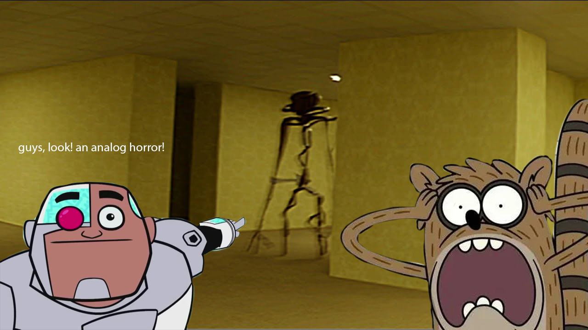

My take on the meme mashup
=======
My take on the Meme Mashup Project in ART 74. Using Photoshop and going through tutorials such as the Photoshop Clinic, I developed my Meme Mashup Project, named, "Cartoon Network x The Backrooms." This is inspired by the "Two Soyjaks pointing" meme template, where I replaced the characters with Cyborg from "Teen Titans Go!" specifically in the episode, "Brain Food" where he is humorously pointing at a bird outside. The white text above him is a interpolation of what he says in the original clip, "Guys, look! A Birdie!" I also took a shocked version of the character Rigby from "Regular Show" to add shock factor to what they are witnessing. The background is a photo from a horror web series called "The Backrooms" which Cyborg and Rigby somehow got trapped in. It was very fun and got a good laugh replacing the original context behind the photos and mashing them up into something funny and new. Published Sep 19, 2026 on Canvas Infrastructure.